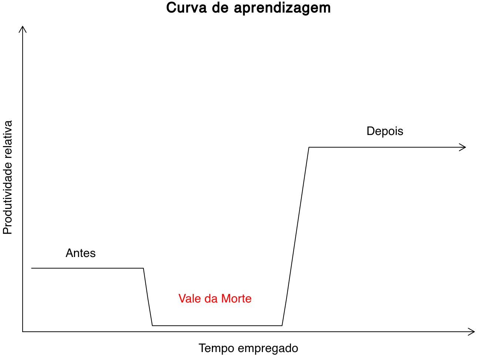

Capítulo 5 Software
Atenção! Este capítulo está em fase de desenvolvimento. Visite a página do projeto se tiver alguma sugestão, dúvida ou estiver disposto a colaborar. Sua opinião/ajuda é muito importante!
5.1 Introdução
5.2 R/RStudio
O R é uma linguagem de programação e um ambiente de análises estatísticas e gráficas gratuito. Sua origem data de 1995, quando os pesquisadores Robert Gentleman e Ross Ihaka iniciaram o projeto de seu desenvolvimento no Departamento de Estatística da Universidade de Auckland na Nova Zelândia. Baseado na linguagem de programação e ambiente estatístico S, desenvolvido por John Chambers e colegas no Bell Laboratories, o nome deriva das iniciais dos dois pesquisadores (R), mas também de uma brincadeira com o nome da linguagem e ambiente no qual foi baseado (S). Hoje o R é um software livre mantido e desenvolvido pelo R Core Team, disponível gratuitamente para qualquer interessado em utilizá-lo, modificá-lo e redistribuí-lo.
O R fornece uma ampla variedade de técnicas estatísticas, incluindo análises univariadas, bivariadas e multivariadas, desde as mais simples até as mais complexas, como análises descritivas, análise de variância e testes de médias, análise de agrupamento e de componentes principais, análise de séries temporais, modelagem geoestatísticas e muito, muito mais. O R ainda fornece uma série de ferramentas para produção de diversos tipos gráficos com qualidade para publicação. Todas essas técnicas e ferramentas, além de amplamente documentadas, são customizáveis e extensíveis. Assim, além de dispor das técnicas já incluídas no ambiente R, o usuário pode utilizar-se da linguagem R para criar suas próprias técnicas e, em seguida, torná-las disponíveis para uso pela comunidade científica.
A grande vantagem do R em relação aos demais softwares existentes para análises estatísticas e gráficas é o fato de ele aliar o enorme volume de técnicas de análise estatística e gráfica à completa gratuidade. Ao contrário do que alguns possam pensar, essa gratuidade não é sinônimo de baixa qualidade. Pelo contrário, é a gratuidade que permite que milhares de cientistas ao redor do mundo usem e verifiquem a qualidade dessas técnicas. São esses mesmos cientistas que ajudam a desenvolver o R mais e mais, disponibilizando grande parte de seu tempo de trabalho para elaborar a miríade de tutoriais e materiais de apoio para o R disponíveis atualmente – nenhum software comercial possui, seja em meio digital ou em meio impresso, um volume de material de apoio maior do que o R. Ao tornar-se uma linguagem comum entre os cientistas, o R ainda permite que o registro das rotinas analíticas possa ser compartilhado e, quando necessário, verificado ou disponibilizado para verificação por outros cientistas, possibilitando a observação de um dos principais ideias do método científico: a reprodutibilidade.
Em resumo, o R é completamente gratuito, pode ser usado para conduzir qualquer tipo de análise estatística e gráfica, é amplamente documentado, customizável e extensível, permite o compartilhamento e reprodução de rotinas analíticas, sendo uma linguagem comum entre cientistas de diferentes partes do mundo. Será que é preciso dizer mais alguma coisa para convencer-te a usar o R?
5.2.1 Conhecendo melhor o R
A maneira mais eficiente de conhecer melhor o R é, sem dúvida, instalando-o em seu computador. Para isso precisamos, primeiro, visitar a página do projeto na Internet:
Uma grande quantidade de informação, muito além do que se busca incluir neste capítulo, pode ser encontrada no sítio do projeto. Ali estão disponíveis diversos manuais de uso (Documentation > Munuals), bem como livros (Documentation > Books) e artigos publicados na revista do projeto (Documentation > The R Journal). Ainda há uma página com respostas às perguntas mais frequentes (Documentation > FAQs) e uma página inteira explicando como é possível conseguir ajuda do próprio R antes de recorrer a terceiros (Help With R > Getting Help) – como a documentação do R é extensa e a maioria dos colaboradores do projeto não são pagos pela colaboração, recomendo que você sempre procure, primeiro, resolver qualquer dúvida sozinho.
O procedimento de instalação do R depende do sistema operacional (OS, do inglês operating system) de seu computador:
- Linux: https://cloud.r-project.org/bin/linux/
- (Mac) OS X: https://cloud.r-project.org/bin/macosx/
- Windows: https://cloud.r-project.org/bin/windows/base/
A página referente à cada OS possui as instruções necessárias para descarregar e instalar o R em seu computador. Em geral, o processo de instalação é exatamente igual àquele de outros softwares que você usa em seu dia-a-dia. (Caso o R apresente problemas de funcionamento após a instalação, tente descarregar e instalar a versão anterior do R.)
Depois de instalar o R, agora é a hora de escolher uma interface gráfica do usuário (GUI, do inglês graphical user interface) que facilite nossa interação com o R. Isso porque o R possui apenas uma interface de linha de comando (CLI, do inglês command-line interface), ou seja, a única forma de interação com o R se dá via emissão de comandos sob a forma de sucessivas linhas de texto, as chamadas linhas de comando. Dentre as diversas opções gratuitamente disponíveis, as mais atrativas são aquelas que incluem ferramentas adicionais de apoio à programação em R e facilitem a análise, visualização e gerenciamento dos dados. Tais ferramentas constituem os chamados ambientes de desenvolvimento integrado (IDE, do inglês integrated development environment). Atualmente, a GUI e IDE mais popular é o RStudio, cujo instalador pode ser descarregado de https://www.rstudio.com/products/rstudio/download/.
Assim como para o R, o procedimento de instalação do RStudio depende do OS do seu computador. Depois de instalado, inicie o RStudio em seu computador. Ele deve se parecer mais ou menos como na figura a seguir:

RStudio – interface gráfica do usuário e ambiente de desenvolvimento integrado para R (em sua versão para Linux). Uma extensa lista de alternativas está disponível na Wikipedia.
Você deve ter notado que o RStudio é composto por quatro grandes painéis retangulares, cada um contendo conteúdo específico. Grosso modo, o painel superior direito mostra informações diversas sobre a atual sessão de trabalho, sendo geralmente pouco utilizado. Já o painel inferior direito serve à visualização de gráficos e páginas de ajuda do R, o que o faz ser bastante utilizado. O painel superior esquerdo é aquele utilizado para a programação em R, ou seja, aquele onde o código fonte utilizado para a análise dos dados é editado. Esse painel é aquele onde creio que ocupamos a maior parte do tempo. Por fim, o painel inferior esquerdo corresponde à interface de linha de comando, CLI, do R. É ali que o código fonte editado no painel superior esquerdo deve ser emitido para que a mágica aconteça. Para isso você pode, no editor, posicionar o cursor sobre a linha de código fonte que deseja que seja emitida e pressionar, simultaneamente, as teclas Ctrl e Enter. Alternativamente, para emitir um bloco de código fonte, você deverá selecioná-lo por completo, e então pressionar as teclas Ctrl e Enter.
5.2.2 Primeiros passos
Façamos algumas operações matemáticas para nos familiarizarmos com o R. Você pode copiar e colar as linhas de código abaixo no CLI do R, que de agora em diante chamaremos console.
# As quatro operações matemáticas básicas:
2 + 3 # soma## [1] 55* 5 # multiplicação## [1] 2525/5 # divisão ## [1] 55 -3 # subtração## [1] 2# Três operações matemáticas úteis:
2^2 # Potenciação (ou exponenciação)## [1] 4log(4) # Função logarítmica## [1] 1.386294sqrt(25) # Raiz quadrada## [1] 5Você deve ter notado que que os símbolos utilizados (+, *, / e -) são os mesmos encontrados em qualquer calculadora científica. São também os mesmos utilizados nas operações matemáticas de qualquer planilha eletrônica de edição de dados. Isso significa que podemos deduzir algumas coisas sobre o funcionamento do R a partir do que conhecemos de outros softwares dedicados à análise e manipulação de dados. Você também deve ter observado que o espaçamento entre número e operador matemático não tem qualquer importância do ponto de vista da operação matemática. Contudo, do ponto de vista estético – para facilidade de leitura do código fonte –, costuma-se usar a formatação 2 + 3 ao invés de 2+3.
Outro detalhe importante nas linhas de código acima é o uso do símbolo # para a inclusão de comentários. Os comentários podem ser incluídos tanto em uma linha própria como após (nunca antes) um comando. A inclusão de comentários no código fonte é fundamental para documentarmos a atividade que estamos realizando a fim de que outros (e nós mesmos, algumas semanas ou meses mais tarde) possamos entender o propósito daquelas linhas de código.
Finalmente, você deve ter notado que as duas últimas operações matemáticas foram feitas usando uma declaração nominal e dois parênteses, ou seja, log() para a função logarítmica e sqrt() para a raiz quadrada. Na verdade, log() e sqrt() são funções do R, assim como sum() (soma), diff() (diferença), entre outras. Uma função arbitrária chamada fun() sempre é usada da seguinte maneira: fun(x), onde x é um argumento qualquer (um número, por exemplo) tomado pela função. Por exemplo, uma função bastante conhecida entre nós é aquela da Lei Básica da Ciência do Solo,
\[solo = f(cl, o, r, p, t, \ldots)\]
onde \(cl\) representa o clima, \(o\) representa os organismos vivos, incluindo nós seres humanos, \(r\) significa relevo, \(p\) é o material parental, \(t\) representa o tempo e \(\ldots\) são fatores não conhecidos ou de limitada relevância. Em R, essa função seria escrita exatamente da seguinte forma: solo(cl, o, r, p, t, ...). Vejamos mais um exemplo, agora de uma função que aceita vários argumentos:
# No RStudio, ponha o cursor sobre o nome da função e pressione 'F1' para ver a
# sua página de ajuda. Lá você verá o nome dos argumentos aceitos pela função
# 'plot()' seguido de uma breve descrição.
plot(x = 25, y = 25, col = "red", main = "Um ponto vermelho", xlab = "x", ylab = "y")
5.2.3 Conceitos básicos
Passada a primeira impressão, agora precisamos nos familiarizar com alguns conceitos básicos para que possamos entender o R e utilizá-lo com êxito. Conforme destacado acima, o R não é um simples software para análises estatísticas, mas sim um ambiente de programação. E, para isso, precisamos de uma linguagem de programação, ou seja, a linguagem de programação R. Como sabemos, uma linguagem é um sistema de signos (símbolos ou palavras) convencionados que serve para a comunicação de conceitos, ideias, significados, pensamentos – veja mais sobre linguagem na Wikipedia. Assim, uma linguagem de programação será, também, um sistema de signos convencionados, mas que serve para a nossa comunicação com um computador, especificamente, para dar instruções a um computador. Sendo uma linguagem, haverá regras sintáticas e semânticas (uma gramática), as quais devem ser estritamente respeitadas para que haja, efetivamente, comunicação entre nós e o computador – veja mais sobre linguagem de programação na Wikipedia
A gramática de uma linguagem de programação possui dois elementos principais: as palavras reservadas e as palavras-chave. As palavras reservadas constituem signos com significado especial para a linguagem de programação, definidas internamente no código fonte, e que não podem ser utilizadas pelo usuário para fins outros que não aqueles especificados internamente pelo software (por exemplo, para identificar objetos e funções – veremos esses conceitos a seguir). Algumas das palavras reservadas do R são if, else, while, TRUE e FALSE. No editor de código fonte do RStudio as palavras reservadas aparecem sempre destacadas em azul – busque pelo termo reserved no painel de ajuda do RStudio (painel inferior direito) para conhecer as palavras reservadas do R.
As palavras-chave são aquelas utilizadas para definir funções (e objetos, como veremos a seguir). As palavras-chave que definem funções são aquelas que acionam operações matemáticas e lógicas que possibilitam, por exemplo, a realização de uma determinada análise estatística de um determinado conjunto de dados – na verdade, tudo o que “acontece” no R acontece pela ação de uma função. As palavras-chave que definem funções podem já estar definidas na própria linguagem de programação – como log, sqrt e plot nos exemplos acima – ou ser criadas pelo usuário. Isso significa que o usuário pode criar suas próprias funções conforme sua necessidade. Vejamos um exemplo:
# A palavra-chave 'soma' é usada para definir uma função que computa
# e retorna como resultado `res` a soma de dois valores numéricos.
# A estrutura de uma função aparece, sempre, entre '{' e '}'.
soma <-
function (x, y) {
res <- x + y
return (res)
}
soma(x = 2, y = 2)## [1] 4Você deve ter notado que duas palavras reservadas foram usadas na construção da função soma(). São elas: function e return. Além disso, uma segunda palavra-chave foi usada: res. Essa palavra-chave foi usada para definir um objeto que armazena o resultado da operação matemática realizada usando o símbolo +. Assim, na verdade, a função soma() não retorna o resultado da operação matemática, mas sim um objeto que armazena o seu resultado. Grosso modo, um objeto nada mais é do que uma estrutura de dados – como diria John Chambers, tudo o que “existe” no R é um objeto. Essas estruturas de dados são vetores, matrizes, listas e outras estruturas de dados inseridas ou criadas pelo próprio usuário ou produzidas como resultado dos diversos procedimentos analíticos. Vejamos alguns exemplos para nos familiarizamos com o conceito de objeto.
Imagine dois vetores de dados \(x = [1, 2, 3, 4, 5]\) e \(y = [2, 4, 3, 5, 7]\). Esses vetores são inseridos no R e nomeados, respectivamente, como x e y. Então, x e y passam a ser palavras-chave que identificam dois objetos, ou seja, uma estrutura de dados, nesse caso, vetores. Ao emitirmos uma chamada dos objetos x e y, o R retorna os respectivos valores neles armazenados:
# Definindo dois objetos vetoriais
# Note que quando criamos uma sequência ordenada de valores podemos
# simplesmente usar o símbolo ':' entre o menor e o maior valor da
# sequência ao invés de declarar todos os seus valores.
x <- 1:5
y <- c(2, 4, 3, 5, 7)
x## [1] 1 2 3 4 5y## [1] 2 4 3 5 7Suponha agora que estamos interessados na construção de um modelo de regressão linear, para a qual usamos a função lm() (do inglês linear model), do vetor \(y\) em função do vetor \(x\):
# Calibração de um modelo de regressão linear
# Note que é possível usar simbolos como '.' e '_' na construção de
# uma palavra-chave identificadora de objeto (ou função).
meu.modelo_linear <- lm(y ~ x)
meu.modelo_linear##
## Call:
## lm(formula = y ~ x)
##
## Coefficients:
## (Intercept) x
## 0.9 1.1Nesse exemplo, o objeto identificado pela palavra-chave meu.modelo_linear constitui uma estrutura de dados que contém todas as especificações do modelo de regressão linear de \(y\) em função de \(x\). Ao emitirmos uma chamada ao objeto meu.modelo_linear o R retorna os coeficientes do modelo de regressão linear calibrado. Se você quiser conhecer mais sobre a estrutura do objeto meu.modelo_linear, use o seguinte comando: str(meu.modelo_linear). Como sugestão, use também os comandos anova(meu.modelo_linear), summary(meu.modelo_linear) e plot(meu.modelo_linear).
Você deve ter notado nos exemplos acima que a atribuição de uma palavra-chave à um objeto ou à uma função está sempre atrelada ao uso do símbolo <-. Por exemplo, x <- 1:5 atribui a palavra-chave x ao objeto de estrutura vetorial contendo valores numéricos de 1 até 5. A atribuição também pode ser feita usando o símbolo =. Contudo, como = também pode ser usado em contextos outros que não a atribuição de palavras-chave, o uso de <- costuma ser preferido.
5.2.4 Os pacotes
A instalação básica do R oferece uma série de ferramentas para análises estatísticas e gráficas. Essas ferramentas são organizadas em pacotes. Um pacote constitui uma coleção de arquivos e diretórios que contém as regras sintáticas e semânticas que definem determinadas operações matemáticas e lógicas. Cada pacote possui um nome específico e ficam armazenados no diretório de instalação do R. São exemplos os pacotes base e stats.
Conforme dito acima, o R oferece uma infinidade de ferramentas para análises estatísticas e gráficas desenvolvidas por cientistas ao redor de todo o mundo. Contudo, essas ferramentas não estão disponíveis na instalação básica do R. Para ter acesso a essas ferramentas você precisa instalar novos pacotes, ou seja, novas coleções de arquivos e diretórios que contém regras sintáticas e semânticas que definem operações matemáticas e lógicas. No caso da análise de dados espaciais (geográficos), o pacote mais importante é o sp. Para análises geoestatísticas temos, entre outros, os pacotes gstat e geoR. Já os pacotes spcosa e spsann prestam-se à amostragem espacial. A seguir você tem uma visão da lista de pacotes disponíveis para o R.
Existem duas maneiras principais para instalar um novo pacote. Primeiro, você pode ir até o painel inferior direito do RStudio e escolher Packages > Install. Na caixa de diálogo que aparecerá, você insere o nome do pacote que quiser instalar – você também pode inserir o nome de vários pacotes separados por um espaço. Definido o pacote, basta pressionar Install. A outra maneira é usando uma linha de comando como segue:
# Instalando novos pacotes no R.
# Procure na ajuda da função 'install.packages' pelo significado
# do argumento 'dependencies'.
install.packages(
c("sp", "raster", "rgdal", "pedometrics", "randomForest", "rsaga"), dependencies = TRUE)Pronto! Agora você terá a sua disposição também as funcionalidades incluídas nesses pacotes.
5.2.5 Uma palavra de motivação
Nesse ponto você já deve ter percebido que, para usar o R, será preciso aprender uma nova linguagem, um novo sistema de signos. Alguma coisa poderá ser deduzida a partir daquilo que já sabemos em função do uso de outros softwares de análise e processamento de dados. Contudo, como qualquer linguagem de programação, o R possui suas especificidades, boa parte das quais é preciso conhecer para termos sucesso em seu uso. Além disso, algum conhecimento da língua inglesa será necessário, haja vista que as palavras reservadas e palavras-chave são derivadas de palavras da língua inglesa, e praticamente toda a (extensa) documentação está disponível apenas em inglês. Se todos esses detalhes que vimos até agora lhe deixaram assustados ou apreensivos, é preciso que você esteja ciente que está adentrando os domínios do Vale da Morte:

As primeiras experiências com o R serão difíceis e você se sentirá perdido, talvez desesperado. A tentação de abandonar o R aparecerá logo – se já não apareceu –, e você se sentirá inclinado a voltar a usar apenas as mesmas ferramentas que usava antes. Contudo, você precisa resistir e acreditar que consegue vencer os perigos do Vale da Morte. Você precisa estar disposto a encarar a íngreme curva de aprendizagem do R. Depois de passar por tudo isso, sua produtividade (ou capacidade produtiva) deverá ser algumas ordens de magnitude maior do que antes de conhecer o R.
5.2.6 Lembrete final
Conforme vimos acima, todas as funcionalidades do R são acionadas pelo uso de comandos de texto e símbolos (matemáticos ou não). A maioria desses comandos e símbolos já estão definidos na linguagem do R e, por isso, quando utilizados, devem ser inseridos de maneira correta para que sejam efetivamente reconhecidos. Assim, é importante ter muito cuidado durante a edição do código fonte. Tome cuidado, por exemplo, com a sensibilidade do R ao uso de letras maiúsculas e minúsculas. E evite, sempre, o uso de acentuação e cedilha em palavras-chave para nomear objetos e funções.
Se você emitir um comando e o mesmo estiver sintaticamente incompleto, o console mostrará o símbolo +, indicando que há algo faltando. Note que esse aviso não é uma mensagem de erro, ou seja, não há necessidade de reescrever o comando, mas apenas completar o que falta. Mas se o comando possuir erros sintáticos, os mesmos serão identificados pelo RStudio ainda no editor do código fonte, mostrando um símbolo vermelho ao lado da linha na qual é mais prováve que o erro se encontra.
Como o domínio do uso do R depende da memorização, pelo menos parcial, dos nomes das funções e seus argumentos, sugiro que você sempre tenha à mão algum cartão de referência. Abaixo você pode encontrar quatro deles produzidos por diferentes usuários do R: